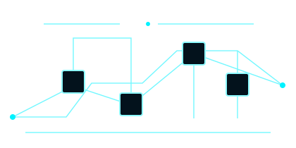

AI Researcher / Live Prototype
Future Tech
Building tomorrow. Streaming the future.
未来をつくる技術系ストリーマー。AI開発、配信UI、音声実験を、視聴者と一緒に試作しながら公開しています。
Lab Profile
AI研究と配信演出をつなぐ、未来検証型VTuber。
AI Researcher & Developer
未来テック / Streamer F
AIツール、音声処理、配信オーバーレイを題材に、毎週の配信で小さなプロトタイプを作ります。技術に詳しくない視聴者でも参加できるよう、研究ログを短く整理して届けます。
- Specialty
- AI systems / Programming / Sound design
- Tools
- Python / Web UI / OBS / Arduino
- Regular
- Sun 21:00 / Tue 22:00 JST
Core Stats
98Intelligence
92Creativity
247+Experiments
Demo Protocol Schedule
次回配信と実験キュー
ライブ予定は研究プロトコルとして整理しています。初見向け回、開発作業回、コミュニティQ&Aを分けて案内します。
Date
Time
Protocol
Type
Status
20:00
AI Prototype Test
Lab
Live
21:00
System Upgrade
System
Upcoming
20:30
Data Analysis
Data
Upcoming
22:00
Open Lab Q&A
Community
Upcoming
Experiment Records
初見向けアーカイブ
Connect & Follow
ファン向け通知と参加先
配信通知、アーカイブ、Discord研究ログなど、視聴者向けの参加導線です。案件相談とは分けて管理しています。
Protocol Contact
技術企画・コラボ相談
AIツール紹介、開発配信、イベント出演、企業コラボなど、事業者向けの相談窓口です。ファン向けFollow導線とは分けて、目的、希望時期、必要な素材を確認します。
Fill out inquiry form
- contact@futuretech.dev
- Discord
- Streamer F#0721
- Media Kit
- Download PDF